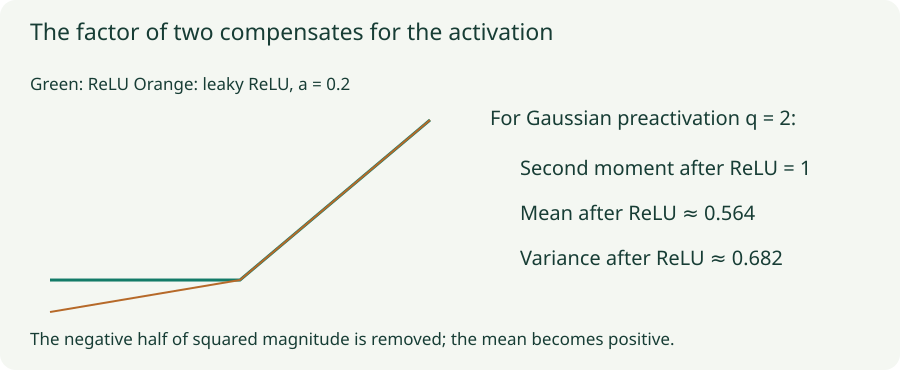

He Initialization: Account for the Activation
Derive the $2/n_{\rm in}$ variance rule for ReLU and $2/((1+a^2)n_{\rm in})$ for Leaky ReLU, and see why preserving the second moment differs from preserving variance.
Because ReLU zeros out negative preactivations, initializing a deep ReLU network with LeCun ($1/n_{\rm in}$) variance cuts signal energy in half at every layer. He (Kaiming) initialization doubles the weight variance to $2/n_{\rm in}$ to compensate for the discarded negative half.
1. Derive He initialization in two steps
Consider layer $l$ with preactivation $z_l=W_lh_{l-1}$ and ReLU activation $h_l=\max(0,z_l)$, where $W_{l,ij}$ are independent with mean $0$ and variance $v$:
- Step 1 — ReLU halves the second moment of a symmetric preactivation: Because $W_l$ is symmetric around $0$, $z_l$ has a symmetric distribution $p(z)=p(-z)$ with second moment $q_{z,l}=\mathbb E[z_l^2]$. Since $h_l=z_l$ for $z_l>0$ and $0$ for $z_l\le 0$, only the positive half survives:
$$\mathbb E[h_l^2]=\int_0^\infty z^2p(z)\,dz=\frac12\int_{-\infty}^\infty z^2p(z)\,dz=\frac12q_{z,l}.$$
- Step 2 — Match the per-layer multiplier to $1$: Passing $h_{l-1}$ into the next linear sum $z_l=\sum_{j=1}^{n_{\rm in}}W_{l,ij}h_{l-1,j}$ gives $q_{z,l}=n_{\rm in}v\,\mathbb E[h_{l-1}^2]=\frac12n_{\rm in}v\,q_{z,l-1}$. Setting $\frac12n_{\rm in}v=1$ yields He initialization:
$$v_{\rm He}=\frac{2}{n_{\rm in}},\qquad\operatorname{std}(W_{ij})=\sqrt{\frac{2}{n_{\rm in}}},\qquad a_{\rm uniform}=\sqrt{3v_{\rm He}}=\sqrt{\frac{6}{n_{\rm in}}}.$$
In the backward pass, $\operatorname{ReLU}'(z)=\mathbf 1_{z>0}$ is $1$ on half the distribution and $0$ on the other half, so $\mathbb E[(\operatorname{ReLU}'(z))^2]=\frac12$. The backward second-moment multiplier is therefore $\frac12n_{\rm out}v$, giving the fan-out variant $v=2/n_{\rm out}$.
2. Why post-ReLU variance is $0.682$, not $1$
If you measure `h.var()` after a He-initialized ReLU layer with unit-variance inputs, you get $\approx 0.682$ instead of $1.0$. Nothing is broken: He initialization preserves the second moment $\mathbb E[h^2]=1$, whereas ReLU shifts the mean $\mathbb E[h]$ above zero.
Specifically, for $z\sim\mathcal N(0,q_z)$, integrating over the positive half gives:
When $q_z=2$ (so $\mathbb E[h^2]=\frac12q_z=1$), the mean is $\mathbb E[h]=1/\sqrt{\pi}\approx 0.564$ and the centered variance is $\operatorname{Var}(h)=1-1/\pi\approx 0.682$. Because the next layer multiplies $h$ by zero-mean weights $W$, its preactivation variance is $n_{\rm in}v\,\mathbb E[h^2]$, which depends on the full second moment $\mathbb E[h^2]=1$ rather than $\operatorname{Var}(h)$.

3. Leaky ReLU and the slope-aware gain
Leaky ReLU keeps negative values scaled by $a$: $\phi(z)=z$ for $z\ge 0$ and $\phi(z)=az$ for $z<0$. Now the positive half contributes $\frac12q_z$ and the negative half contributes $\frac{a^2}{2}q_z$ to the second moment:
Check the two endpoints: at $a=0$ (ReLU), $\text{gain}=\sqrt{2}$ and $v=2/n_{\rm in}$; at $a=1$ (linear), $\text{gain}=1$ and $v=1/n_{\rm in}$ (LeCun scaling). Unlike ReLU and Leaky ReLU, smooth activations such as GELU and SiLU are not scale-homogeneous ($\phi(cz)\ne c\phi(z)$), so their exact moment ratio depends slightly on $q_z$, though $\text{gain}\approx\sqrt{2}$ or architecture-level residual scaling is standard in practice.
4. Lab: compare second moment and variance across depth
ReLU through leaky ReLU to a linear activation
Each layer has width 32, with 48 Gaussian input examples and zero biases. Compare gain 1, ordinary ReLU He gain, and the slope-aware gain. The same seeded standard-normal draws are rescaled for each choice. Charts measure the sampled network; they do not force its moments to equal theory.
- At $a=0$ (ReLU):
Fan-in gain 1loses a factor of $2$ per layer ($2^{-20}\approx 10^{-6}$ at depth $20$), whileReLU gain √2andSlope-aware gainhold the second moment steady near $1$. - At $a=1$ (Linear):
ReLU gain √2now doubles the second moment every layer ($2^{20}\approx 10^6$), whileSlope-aware gainautomatically drops back to $g=1$.
5. Implementation
# He (Kaiming) fan-in normal initialization for a ReLU layer
torch.nn.init.kaiming_normal_(layer.weight, mode="fan_in", nonlinearity="relu")
# Leaky ReLU with negative slope a = 0.2 (gain = sqrt(2 / (1 + 0.2^2)))
torch.nn.init.kaiming_normal_(layer.weight, a=0.2, mode="fan_in", nonlinearity="leaky_relu")6. Questions worth answering
Because $\mathbb E[h^2]=1$ includes the squared positive mean $(\mathbb E[h])^2=1/\pi\approx 0.318$, leaving centered variance $\operatorname{Var}(h)=1-1/\pi\approx 0.682$.
ReLU halves the second moment $\mathbb E[h^2]$, which scales with weight variance $v=(\operatorname{std})^2$. Doubling $v$ requires multiplying $\operatorname{std}$ by $\sqrt{2}$.
No. Gain $\sqrt{2}$ compensates for a ReLU applied to that layer’s output. A linear output head has no ReLU after it, so fan-in ($g=1$), Xavier, or small-logit initialization is appropriate.
Sources
He et al., Delving Deep into Rectifiers; PyTorch initialization documentation.